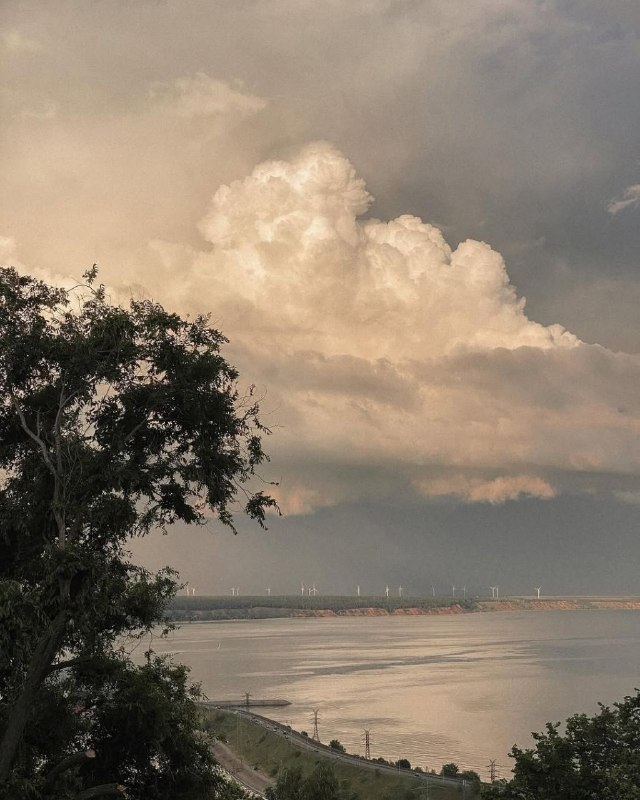
01
Общество и городская среда · событие дня


Уже готовится новый двигатель Skyactiv-Z для следующего CX-5, а собственная EV-платформа появится только в 2027 году .

25 и 26 сентября Избирательная комиссия Ульяновской области провела заседания, в ходе которых ключевыми стали вопросы официального признания полномочий избранного Главы региона и избранных депутатов Госдумы по одномандатным округам.…


Об этом рассказал депутат заксобрания, директор парка «Прибрежный» Юрий Мухин: — «Дельфин» расправил крылья!…
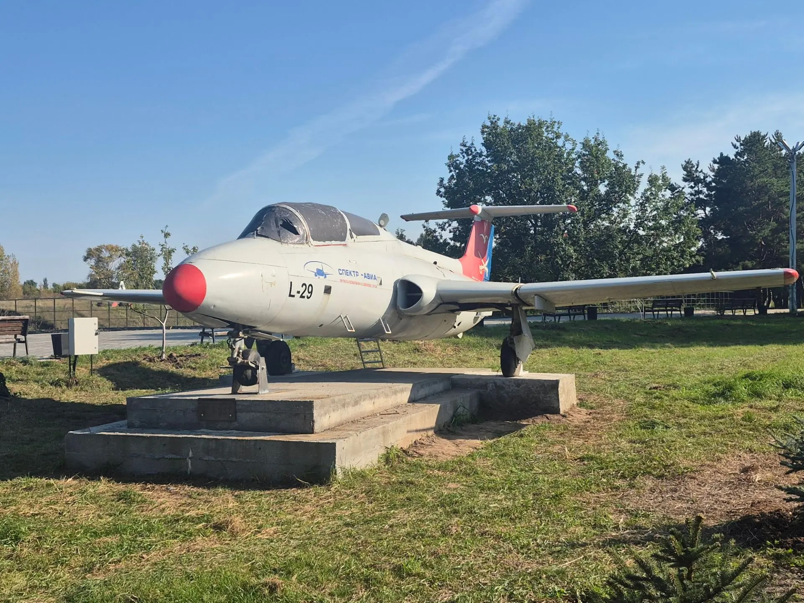
Вручение первых документов состоялось в рамках акции «Мы – граждане России» на заседании Координационного совета по взаимодействию с «Движением Первых», которое провёл глава города Александр Болдакин.…
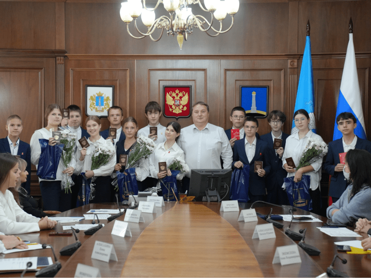
Президент выступил на ХII Международном форуме объединённых культур в Санкт-Петербурге.

Для удобства жителей и гостей региона торговые площадки развернутся сразу на семи пространствах: от площадей областной столицы до муниципальных округов.…

Сейчас МРОТ — 27 093 рубля. К 2030 году его хотят довести до 35 тысяч, чтобы зарплаты у людей с небольшими доходами росли быстрее.…

В этом году победителями регионального этапа стали 23 человека.…
По 29 наименованиям продовольственных товаров из 44 групп, отслеживаемых Росстатом, регион занимает позиции с первого по седьмое — начиная от минимальной цены.…
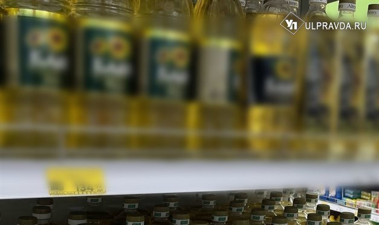
Сотрудники ульяновской площадки СОЛЛЕРС, ветераны УАЗ и почетные гости стали зрителями театрализованного пролога «Вне границ, вне времени» — истории о том, как благодаря труду, упорству и мечте рождался и развивался легендарный завод, который в этом году отмечает 85-летие.…
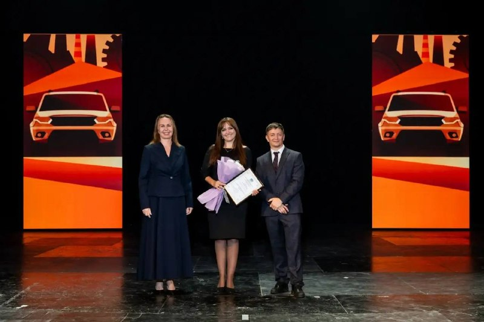
Атомщиков поздравили представители областной и городской власти. Лучшим сотрудникам вручили почётные награды.

Сегодня в Засвияжском районе Ульяновска проходит первая в новом сезоне продовольственная ярмарка, расположенная на территории торгового комплекса «Звезда» (ул.…
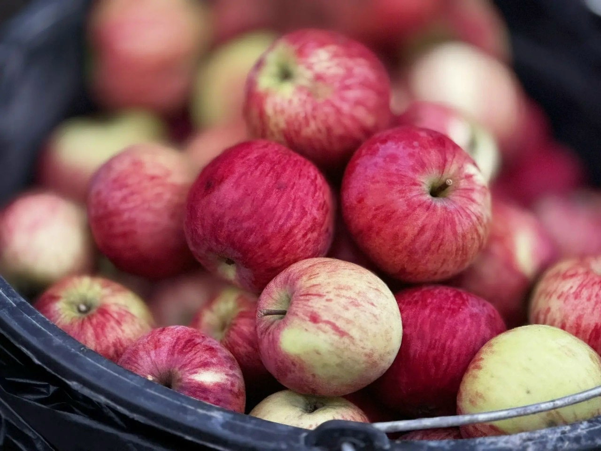
Выплаты планируют сделать федеральными — это должно мотивировать людей следить за здоровьем.
26 сентября с 9:00 до 14:00 рядом с Домом быта (ул. Гончарова, 23б) будет работать передвижной флюорограф.…
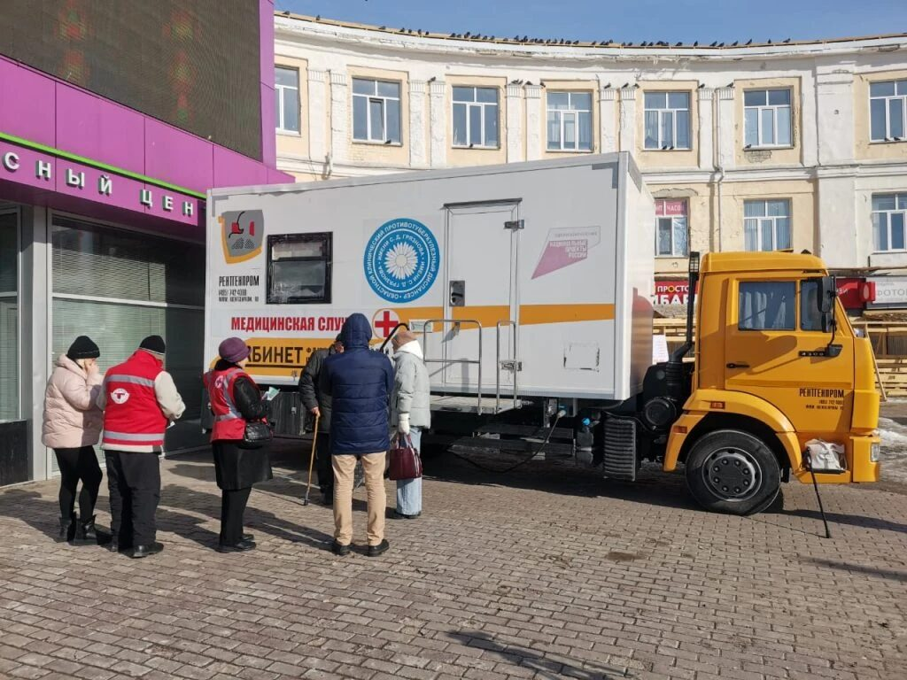
Машинист пассажирского поезда №66 Москва — Тольятти, получившего повреждения из-за внешнего вмешательства, госпитализирован в медицинское учреждение Самарской области в состоянии средней степени тяжести.…

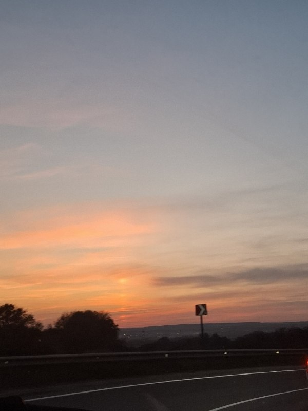
26 сентября в рамках тематической недели нацпроекта «Продолжительная и активная жизнь» жители региона смогут пройти диспансеризацию.…


В зачёте N2 (мотовездеходы) лучший результат показал экипаж Тимофея Кузьменко и Ивана Безденежных (9 минут 59 секунд).…
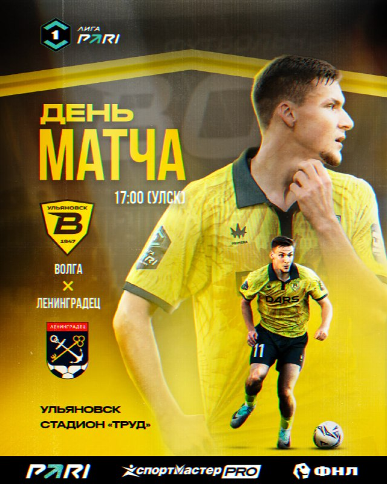
Сегодня игра почти забыта, но ульяновцы могут увидеть оригинальный набор в музее «Мелочная лавка».…


Подозреваемого задержали. Им оказался 43-летний местный житель, ранее судимый и не имеющий работы. Возбуждено уголовное дело о краже.…

В дежурную часть ОМВД России по Засвияжскому району города Ульяновска обратилась 46-летняя местная жительница, работающая продавцом, с заявлением о хищении имущества.…

Дорожные службы привели в порядок посадочные площадки. Маршрут №107 снова работает в штатном режиме.…


Повреждённый рядом остановочный павильон начали восстанавливать сотрудники МБУ «Правый берег».…

Семье оказывается необходимая поддержка.…

В управлении МЧС России по Ульяновской области подвели итоги минувших суток.…

✔️ При оплате всей суммы сразу есть скидка Консультация юриста бесплатная!…

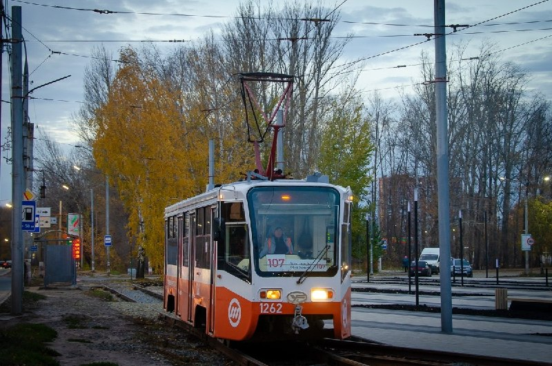

Жителям представили овощи нового урожая, мясную и молочную продукцию, фермерские сыры, мёд, хлебобулочные изделия и многое другое.…
Волонтёры помогут донести покупки пожилым людям и людям с ОВЗ.…


🛣️ Ремонт дорог О ходе работ рассказал директор МКУ «Городские дороги» Дмитрий Коваль.…
В регионе завершил работу первый Молодёжный географический форум, приуроченный к 20-летию объединения стран БРИКС.…

Вместе с главой Заволжского района и ветераном СВО обсудили планы по благоустройству: цель — сделать парк современным пространством для семейного отдыха, сохранив военно‑патриотическую и спортивную тематику.…


Определены и школы, которые обновятся в 2028 году.…

24 сентября в торжественном мероприятии, посвященном празднованию Дня воспитателя и всех дошкольных работников принял участие губернатор Алексей Русских.…
Работа педагога требует огромных душевных сил, и в этот день так хочется подарить им не дежурный сувенир, а искреннюю заботу, тепло и время для себя.……


Итоги регионального этапа конкурса «Ученик года – 2026» подвели на базе детского оздоровительного центра «Юность» в Димитровграде.…
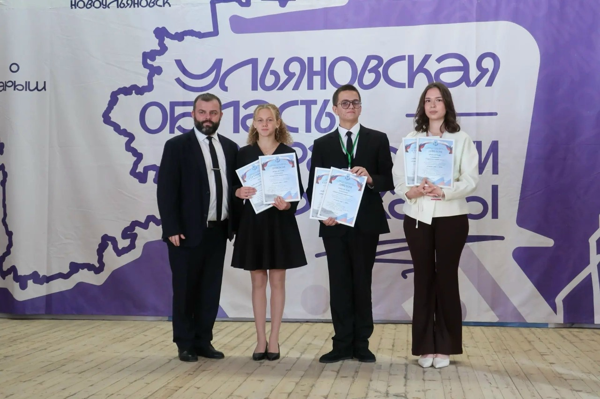

73online подготовил подробный гид по главным локациям для идеальной перезагрузки.

Путёвку на главную сцену страны ульяновский коллектив получил в результате отборочного этапа IX Всероссийского фестиваля народного и сценического искусства «Танцуй и пой, моя Россия!», который прошёл в Йошкар‑Оле.…
📅 Когда: 22 октября в 19:00 📍 Где: «Шипр» (ул.…

Сегодня, 25 сентября, в регионе переменная облачность, без осадков.…
| Тема | Завтра | Ожидание | Уверенность |
|---|---|---|---|
| БПЛА и воздушные угрозы | ↑ рост | ~89.5 упоминаний | средняя |
| Выборы | ↓ спад | ~0.0 упоминаний | высокая |
| Медицина | ↑ рост | ~27.4 упоминаний | средняя |
| Школы и вузы | ↑ рост | ~26.5 упоминаний | средняя |
| Суды и криминал | ↑ рост | ~42.7 упоминаний | средняя |
| Экспорт и кооперация | ↓ спад | ~3.0 упоминаний | средняя |